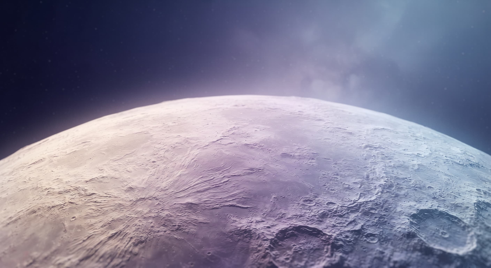

Space is part of your everyday.
Collection / 01YOUR EVERYDAY.
BEYOND
EARTH.
From your morning routine to your next planet. Meet the things that make life beyond Earth feel like home.
Made for you / Everyday essentials
A LITTLE MORE
OUT OF THE EVERYDAY.
Something to wear. Someone to call. A little help at home. Familiar comforts, ready for a different world.
Made to go further / Exploration & transport
BIG PLANS.
AN EASY FIRST STEP.
Meet a new landscape or take the short way to another world. Find the right companion for your next journey.
Far apart. Closer than ever.
CONNECTED WORLDS.
SOL SYSTEM / NETWORK TOPOLOGY01 / terra02 / ares03 / vela04 / noctis05 / lumaFive worlds. One shared horizon.
The Nova Orbit philosophy
NEW WORLDS.
FAMILIAR FEELINGS.
GOOD TECHNOLOGY MAKES ROOM FOR EVERYDAY LIFE.
A future you can feel at home in.Meet Nova Orbit ↗
The next chapter is yours
YOUR NEXT
DESTINATION
IS WAITING.
A suit for your next outing. A call with someone you miss. Find something that makes life beyond Earth feel like you.
